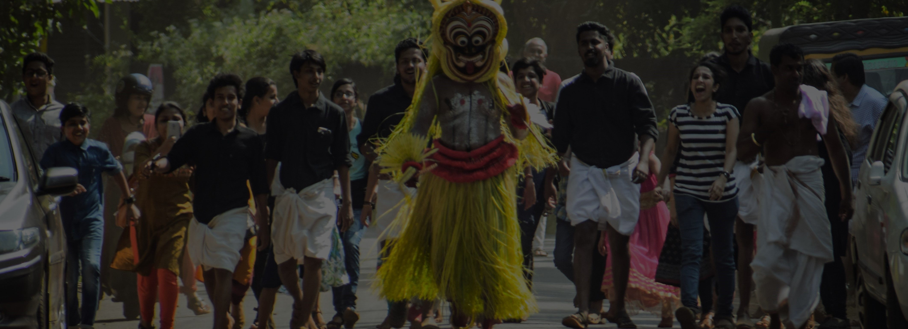

Kannur
Kannur, situated in Kerala, India, is celebrated for its picturesque beaches, historic forts like St. Angelo's and Thalassery, and vibrant Theyyam rituals. Renowned for handloom textiles, it's a cultural treasure trove. Kannur's blend of history, art, and natural beauty entices visitors, offering an authentic taste of Kerala's charm.
Last updated 3 mins ago